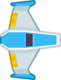
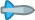
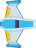
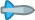
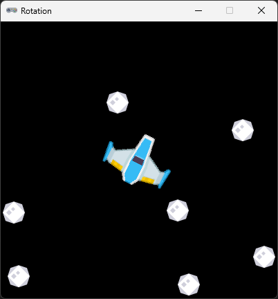

Actor sprites
0 grader roteret rumskib
{kind=link}
0 grader roteret missil
{kind=link}
0 grader roteret missil

Vi vil i det følgende lave forskellige ting med Pygame Zeros Actor objektet.
Gennem kode eksempler får vi en bedre forståelse af mulighederne med en Actor.
0 grader roteret rumskib
0 grader roteret missil
0 grader roteret missil
Vi bruger det færdige program fra Actor - Roter som udgangspunkt
import math
WIDTH = 400
HEIGHT = 400
TITLE = 'Rotation'
ship = Actor('spaceship0',center=(200, 200))
ship.vx = 0
ship.vy = 0
bullets = []
def update():
if ship.x < 0:
ship.x = WIDTH
if ship.x > WIDTH:
ship.x = 0
if ship.y < 0:
ship.y = HEIGHT
if ship.y > HEIGHT:
ship.y = 0
for b in bullets:
if not (0 <= b.x <= WIDTH and 0 <= b.y <=HEIGHT):
bullets.remove(b)
b.x += b.vx
b.y += b.vy
if keyboard.right:
ship.angle -= 1
if keyboard.left:
ship.angle += 1
if keyboard.up:
angle_rad = math.radians(ship.angle)
ship.vx = math.cos(angle_rad) * 4
ship.vy = -math.sin(angle_rad) * 4
ship.x += ship.vx
ship.y += ship.vy
ship.vx *= 0.98
ship.vy *= 0.98
def on_key_down():
if keyboard.space:
bullet = Actor('bullet0')
bullet.angle = ship.angle
angle_rad = math.radians(bullet.angle)
bullet.vx = math.cos(angle_rad) * 8
bullet.vy = -math.sin(angle_rad) * 8
bullet.pos = ship.pos
bullets.append(bullet)
def draw():
screen.clear()
for b in bullets:
b.draw()
ship.draw()
Før vi kan tjekke om vores missiler rammer noget, skal vi have nogle kometer ind i spillet.
Det kræver lidt kode så følg godt med.
Først et array til at gemme vores kometer i
astroids =[]En timer til tiden mellem vi spawner en komet
spawn_timer = 2En spawn funktion
def spawn():
astroid = Actor('astroid')
astroid.x = randint(10, WIDTH-10)
astroid.y = randint(10, HEIGHT-10)
astroids.append(astroid)
vi benytter randint fra random biblioteket. Så den skal vi have importeret
from random import randint
Vi skal have ændret lidt i update() signaturen og tilføjet betingelse for at kalde spawn()
def update(dt):
global spawn_timer
spawn_timer -= dt
if spawn_timer < 0:
spawn()
spawn_timer = 2
Og til sidste skal vi have tilføjet astroids array til draw() for at få vist vores kometer på skærmen
for a in astroids:
a.draw()
Prøv nu programmet af.
Nu er det tid til at lave kollision tjek.
I vores update har vi allerede en for loop på vores bullets.
I for loopen flytter vi misilerne fremad. Så lige efter vi har flyttet dem fremad kan vi nu tjekke om missilet har ramt noget.
Så indsæt koden nedenfor.
Koden løber astroids igennem og ser som der er kollision mellem misilet og komet.
Hvis der er kollision slettes både missil og komet.
Der laves et break af astroids loop da det nuværende missil er slettet og der for ikke rammer mere.
for a in astroids[:]:
if b.colliderect(a):
bullets.remove(b)
astroids.remove(a)
break Prøv det af.
Vi kan godt gøre det lidt bedre end det.
vi har rent kollision tjek på på om den "usynlige" firkantet kasse rundt om vores missil sprite
rammer den "usynlige" kasse på vores komet sprite.
Lad os gøre det lidt bedre ved at tjekke afstanden og hvis den er tilpas lille, så ser vi det som et "kill"
if b.distance_to(a) <= a.width/2:
bullets.remove(b)
astroids.remove(a)
break
Prøv nu. Måske vil du gøre afstanden mindre eks. a.width/2
Det kan også være en fordel at reducer missil hastigheden lidt mens du prøver ad.
import math
from random import randint
WIDTH = 400
HEIGHT = 400
TITLE = 'Rotation'
ship = Actor('spaceship0',center=(200, 200))
ship.vx = 0
ship.vy = 0
bullets = []
astroids =[]
spawn_timer = 2
def update(dt):
global spawn_timer
spawn_timer -= dt
if spawn_timer < 0:
spawn()
spawn_timer = 2
if ship.x < 0:
ship.x = WIDTH
if ship.x > WIDTH:
ship.x = 0
if ship.y < 0:
ship.y = HEIGHT
if ship.y > HEIGHT:
ship.y = 0
for b in bullets:
if not (0 <= b.x <= WIDTH and 0 <= b.y <=HEIGHT):
bullets.remove(b)
b.x += b.vx
b.y += b.vy
for a in astroids[:]:
if b.colliderect(a):
if b.distance_to(a) <= a.width/4:
bullets.remove(b)
astroids.remove(a)
break
if keyboard.right:
ship.angle -= 1
if keyboard.left:
ship.angle += 1
if keyboard.up:
angle_rad = math.radians(ship.angle)
ship.vx = math.cos(angle_rad) * 4
ship.vy = -math.sin(angle_rad) * 4
ship.x += ship.vx
ship.y += ship.vy
ship.vx *= 0.98
ship.vy *= 0.98
def on_key_down():
if keyboard.space:
bullet = Actor('bullet0')
bullet.angle = ship.angle
angle_rad = math.radians(bullet.angle)
bullet.vx = math.cos(angle_rad) * 8
bullet.vy = -math.sin(angle_rad) * 8
bullet.pos = ship.pos
bullets.append(bullet)
def draw():
screen.clear()
for b in bullets:
b.draw()
ship.draw()
for a in astroids:
a.draw()
def spawn():
astroid = Actor('astroid')
astroid.x = randint(10, WIDTH-10)
astroid.y = randint(10, HEIGHT-10)
astroids.append(astroid)